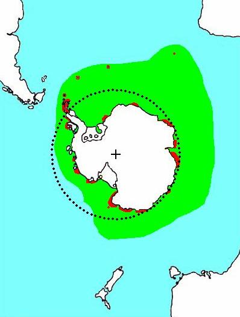
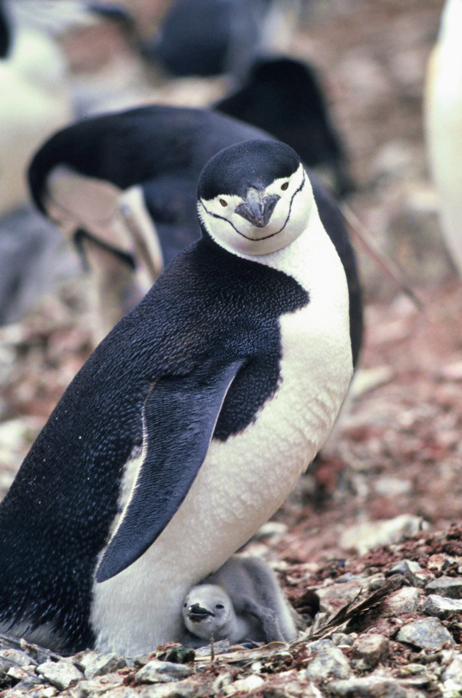
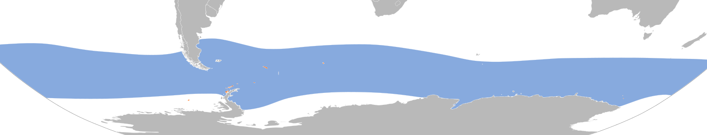
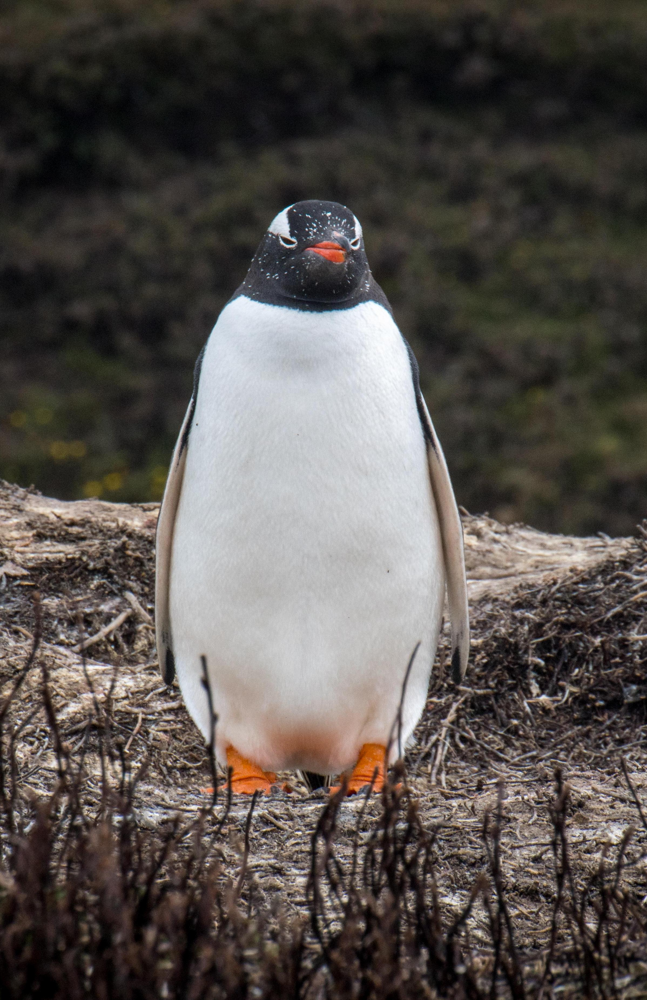
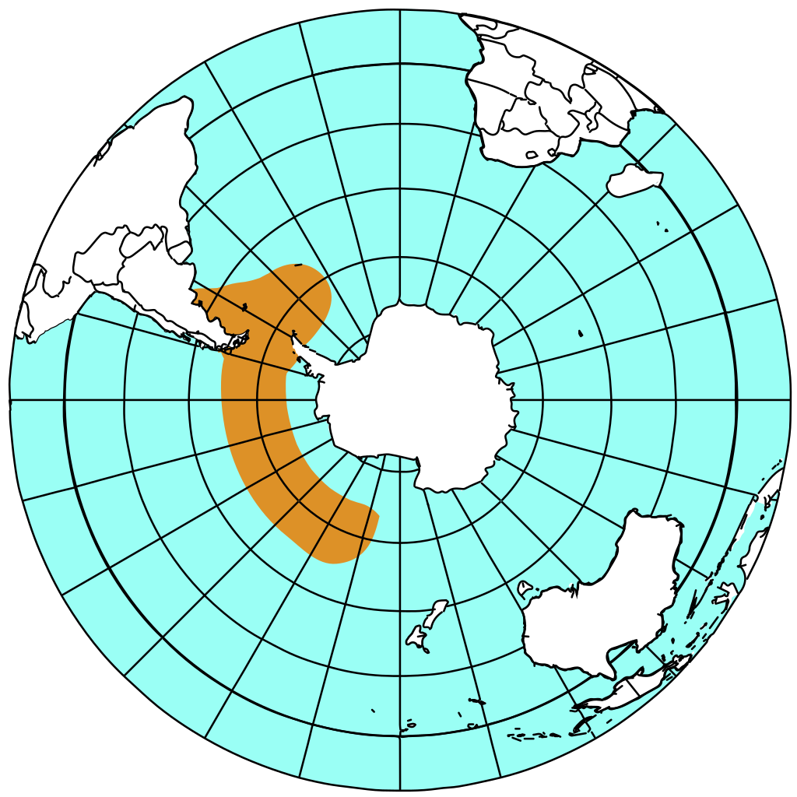

|
Manchot Adélie
Pygoscelis adeliae
|
 |
Le nom de l'espèce de ce manchot provient également d'un explorateur,
le Français Jules Dumont d'Urville."Adéle" était le nom de sa femme, et lorsqu'il a découvert ce manchot lors de
ses explorations en Antarctique, il a fait preuve d'un geste romantique ultime en donnant à l'adorable
manchot Adélie le nom de sa femme.
|
|  |
Manchot à jugulaire
Pygoscelis antarcticus
|
 |
Sur terre, les manchots à jugulaire construisent des nids circulaires en utilisant des
pierres et pondent deux oeufs. Les deux parents couvent les oeufs à tour de rôle,
effectuant des périodes d'incubation d'environ 6 jours chacun.
|
|  |
Manchot papou
Pygoscelis papua
|
 |
La distribution Linux Gentoo Linux tire son nom du Gentoo Penguin (Manchot papou en Anglais).
C'est un clin d'oeil au fait que le manchot papou est le manchot
qui nage le plus rapidement, car Gentoo Linux vise à être un système
d'exploitation performant.
|